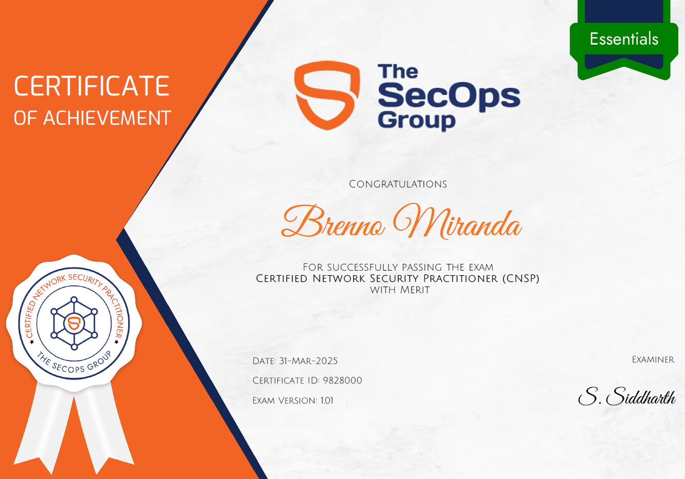

The CNSP, Certified Network Security Practitioner, offered by The SecOps Group, is a certification
focused on network security, with emphasis on identifying common vulnerabilities in cryptography, Active
Directory, Windows and Linux hardening, as well as social engineering.
On 03/31/2025, I took the exam and passed with merit.

Topics Covered
Regarding the certification scope, the following topics are covered:
- TCP/IP (Protocols and Networking Basics)
- OSI Layer
- IPv4 and IPv6 addresses
- Router, Switch and Hub
- Network Discovery Protocols
- Network Architectures, Mapping and Target Identification
- Network Scanning & Fingerprinting
- Testing Network Services
- Cryptography
- Active Directory Security Basics
- Linux and Windows Security Basics
- Common Vulnerabilities Affecting Windows Services
- Testing Web Servers and Frameworks
- Basic Malware Analysis
- Social Engineering Attacks
- Network Security Tools and Frameworks (Such as Nmap, Wireshark, etc.)
- Open-Source Intelligence Gathering (OSINT)
- Database Security Basics
- TLS Security Basics
- Password Storage
About the Exam
It is a 60-question multiple-choice exam with 60 minutes available for completion. If the candidate scores more than 60%, they will pass and become certified. If they score more than 80%, their certification will include "with merit", evidencing the high percentage of correct answers. The exam covers all topics mentioned in its scope, with questions ranging from network traffic analysis to problem resolution.During the exam, camera and microphone access is required for physical environment validation and to prevent actions that violate the exam's code of ethics.
Study References for the Exam
- TCP/IP Model | https://www.geeksforgeeks.org/tcp-ip-model
- What is OSI Model? – Layers of OSI Model | https://www.geeksforgeeks.org/open-systems-interconnection-model-osi
- Difference Between IPv4 and IPv6 | https://www.geeksforgeeks.org/differences-between-ipv4-and-ipv6
- Difference between Hub, Switch and Router | https://www.geeksforgeeks.org/difference-between-hub-switch-and-router
- What is Network Discovery? | https://www.solarwinds.com/resources/it-glossary/network-discovery
- Nmap 101: A Beginner's Guide to Network Mapping and Security | https://ravitejbandlekar.medium.com/nmap-101-a-beginners-guide-to-network-mapping-and-security
- Cybersecurity Fingerprinting | https://www.recordedfuture.com/fingerprinting-in-cybersecurity
- Cryptography for Dummies - TryHackMe | https://tryhackme.com/r/room/cryptographyfordummies
- HTTP in Detail - TryHackMe | https://tryhackme.com/r/room/httpindetail
- Basics of Active Directory | https://medium.com/@hrishidevdarsan/basics-of-active-directory
- Linux Security | https://phoenixnap.com/kb/linux-security
- Understanding Social Engineering | https://www.tripwire.com/state-of-security/5-social-engineering-attacks-to-watch-out-for
- Open-Source Intelligence (OSINT) | https://www.imperva.com/learn/application-security/open-source-intelligence-osint
- Managing SQL Ports | https://jotelulu.com/en-gb/support/tutorials/managing-sql-ports-on-your-windows-server
- What is TLS (Transport Layer Security)? | https://www.cloudflare.com/learning/ssl/transport-layer-security-tls
- Security Accounts Manager | https://www.techtarget.com/searchenterprisedesktop/definition/Security-Accounts-Manager
- Password Hunting – Linux Privilege Escalation | https://juggernaut-sec.com/password-hunting-lpe/